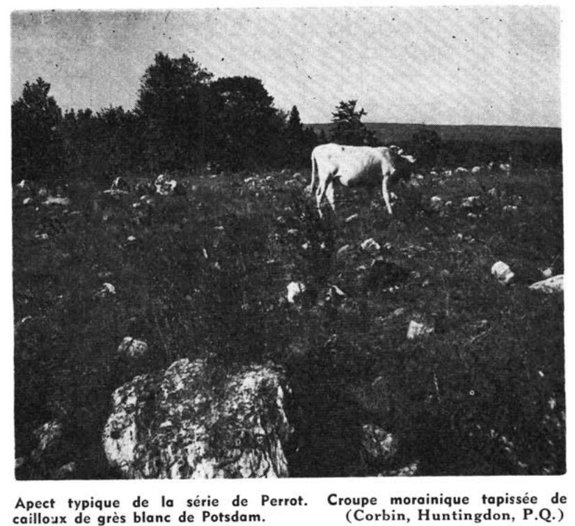
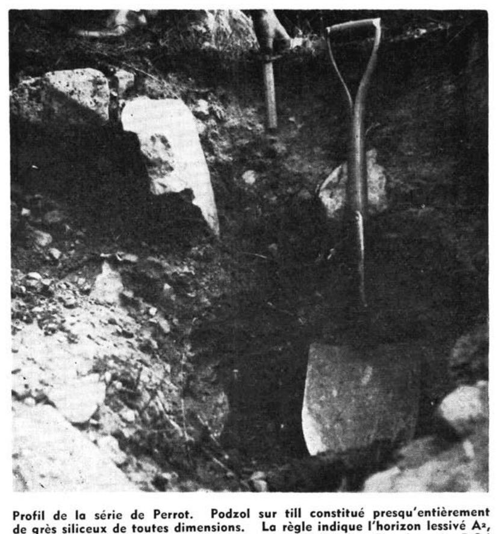

Identification & Caractéristiques Générales
La série Perrot s'est développée sur un till basal ou des moraines frontales et des drumlins remaniés par les eaux de la mer Champlain, dont le matériau parental est principalement dérivé du grès de Potsdam. Sur le plan géomorphologique, ces dépôts se manifestent sous forme de croupes, de terrasses ou de reliefs topographiques ondulés à fortement vallonnés, caractérisés par des pentes variant généralement de 6 à 12 % et une altitude s'échelonnant entre 100 et 300 pieds. Le profil pédologique se distingue par une forte pierrosité et une abondance de blocs anguleux ou de gros boulders de coloration blanche à gris-blanc, tant en surface qu'à l'intérieur du solum.
Morphologiquement, le solum présente une couche de surface constituée d'un loam sableux ou limon sablo-graveleux brun à brun foncé, reposant sur un profil perméable caractérisé par un bon drainage naturel, tant externe qu'interne, favorisé par la topographie et la texture grossière. Cette perméabilité élevée confère au sol une capacité de rétention en eau modérée à faible et entraîne un lessivage marqué des bases échangeables et des éléments nutritifs. La réaction du sol est fortement acide, ce qui, combiné à la nature sableuse et pierreuse du substrat, limite la fertilité naturelle inhérente.
Les aptitudes agronomiques de la série Perrot sont restreintes par la forte pierrosité et la faible rétention hydrique, ce qui restreint considérablement le plein potentiel pour les grandes cultures intensives. Une proportion importante des superficies demeure boisée, dominée par une sylve décidue ou mixte comprenant l'érable à sucre, le hêtre, le bouleau, ainsi que des conifères tels que le pin et la pruche. Pour les secteurs défrichés et exploités en agriculture, la mise en valeur exige un apport régulier en amendements calciques pour corriger l'acidité, ainsi qu'une fertilisation organo-minérale équilibrée pour suppléer aux pertes par lixiviation, tandis que les zones les plus encombrées de blocs rocheux sont préférentiellement vouées à la pâture ou au reboisement.
Classification Taxonomique & Environnement Pédologique
| Ordre Pédologique | Podzolique |
|---|---|
| Grand Groupe (SCSS) | Podzol humo-ferrique |
| Sous-Groupe Taxonomique | Podzol humo-ferrique orthique |
| Famille Pédologique | Loameuse-grossière, siliceuse, acide |
| Mode de Dépôt Parental | Morainique |
| Classe de Drainage Naturel | Bien drainé |
| Régime Thermique & Humidité | Doux / Semi-aride |
Description Morphologique du Profil Type
Séquences génétiques des horizons pédologiques caractérisant le profil type représentatif de la série Perrot :
Profil naturel (vierge) — Comté de Châteauguay
✓ Source : Comté de Châteauguay — Page 91Couleur Munsell : Non précisée
Structure & Consistance : Polyédrique à granulaire
Description morphologique : Horizon composé d'humus très peu mélanisé et de débris végétaux.
Couleur Munsell : Non précisée
Structure & Consistance : Polyédrique à granulaire
Description morphologique : Horizon absent.
Couleur Munsell : 10YR 8/2
Structure & Consistance : Particulaire
Description morphologique : Horizon constitué de sable blanc à gris rosé à l'état sec (10YR 8/2). Distribué sous forme de langues verticales ou en une bande horizontale sinueuse, parfois peu visible. Structure particulaire. Très friable. Réaction ou pH : 5.2.
Couleur Munsell : 10YR 5/3
Structure & Consistance : Polyédrique à granulaire
Description morphologique : Sable limono-graveleux de coloration brun-rouge (humide) à brune à l'état sec (10YR 5/3). De consistance ferme avec tendance à se durcir en un orterde, rarement en un "ortstein" ; pH : 5.0.
Couleur Munsell : 10YR 6/3
Structure & Consistance : Particulaire
Description morphologique : Horizon de passage. Sable à sable limoneux de teinte brun pâle à l'état sec (10YR 6/3). Structure particulaire. Sur les pentes le sol est parfois faiblement tacheté de gley. Réaction (pH) : 5.6 — 5.8.
Couleur Munsell : 2.5Y 6/4
Structure & Consistance : Polyédrique à granulaire
Description morphologique : Roche-mère : till limono-sableux à sablo-limoneux, très pierreux, brun-jaune clair à l'état sec (2.5Y 6/4). Les pierres ou blocs sont de toutes dimensions et constitués presqu'exclusivement de grès de Potsdam. Réaction ou pH : 5.5 — 5.9.
Profil forestier (sous boisé) — Comté de Argenteuil
✓ Source : Comté de Argenteuil — Page 52Couleur Munsell : Non précisée
Structure & Consistance : Granuleuse fine
Description morphologique : Racines et terre franche sableuse organique noire; structure granuleuse fine; très friable; pH 4.9.
Couleur Munsell : Non précisée
Structure & Consistance : Polyédrique à granulaire
Description morphologique : Terre franche sableuse grise délavée.
Couleur Munsell : Non précisée
Structure & Consistance : Polyédrique à granulaire
Description morphologique : Terre franche sableuse brun rougeâtre foncé; généralement monogranulaire et meuble; quelques pierres; pH 5.0.
Couleur Munsell : Non précisée
Structure & Consistance : Polyédrique à granulaire
Description morphologique : Terre franche sableuse brune à brun jaunâtre; rugueuse; monogranulaire; poreuse; couleur s'affadissant en profondeur; pH 5.2.
Couleur Munsell : Non précisée
Structure & Consistance : Polyédrique à granulaire
Description morphologique : Terre franche sableuse gris jaunâtre à till de terre franche; tachetures peu prononcées de brun et de rouille; pH 5.4.
Profil forestier / boisé — Comté de L'assomption
✓ Source : Comté de L'assomption — Page 31Couleur Munsell : 10YR 3/2
Structure & Consistance : Polyédrique à granulaire
Description morphologique : Humus semi-décomposé brun grisâtre très foncé (10YR 3/2); quelques granules friables et grains de sable et de gravier; pH 4.8-5.2.
Couleur Munsell : 10YR 7/2
Structure & Consistance : Particulaire
Description morphologique : Loam sableux gris pâle (10YR 7/2); structure particulaire; friable et perméable; pH 5.0-5.6.
Couleur Munsell : 10YR 5/8
Structure & Consistance : Polyédrique à granulaire
Description morphologique : Loam sableux brun vif à brun jaunâtre (7.5YR-10YR 5/8); quelques fins granules parmi la masse particulaire; très friable; quelques pierres et quelques fragments graveleux; pH 5.0-5.6.
Couleur Munsell : Non précisée
Structure & Consistance : Polyédrique à granulaire
Description morphologique : Till de loam sableux, brun pâle à brun jaunâtre pâle (10YR-6/4); plusieurs pierres; très ferme à l'état sec; pH 5.6-6.4.
Profil représentatif — Comté de Soulanges — Phase mince de
✓ Source : Comté de Soulanges — Page 30Couleur Munsell : Non précisée
Structure & Consistance : Polyédrique à granulaire
Description morphologique : Litière de feuilles semi-décomposées.
Couleur Munsell : Non précisée
Structure & Consistance : Granulée friable ph 4
Description morphologique : Terre franche sableuse brun foncé avec quelques petits fragments de pierre, structure granulée friable pH 4.9.
Couleur Munsell : Non précisée
Structure & Consistance : Polyédrique à granulaire
Description morphologique : Terre franche sableuse gris rosâtre, lessivée.
Couleur Munsell : Non précisée
Structure & Consistance : Granulée
Description morphologique : Terre franche sableuse variant de brun à brun jaunâtre, légèrement rougeâtre dans la partie supérieure de l'horizon; beaucoup de pierres de toutes dimensions, principalement du grès mais aussi de la pierre à chaux. Structure granulée, très friable.
Couleur Munsell : Non précisée
Structure & Consistance : Polyédrique à granulaire
Description morphologique : Till de terre franche sablo-pierreuse gris brunâtre, passablement compact. La profondeur du till sur le roc varie de 2 à probablement 12 pieds. pH 5.5.
Profil représentatif — Comté de Huntingdon
✓ Source : Comté de Huntingdon — Page 186Couleur Munsell : Non précisée
Structure & Consistance : Polyédrique à granulaire
Description morphologique : Humus très peu mélanisé, débris végétaux.
Couleur Munsell : Non précisée
Structure & Consistance : Polyédrique à granulaire
Description morphologique : Horizon absent.
Couleur Munsell : 10YR 8/2
Structure & Consistance : Polyédrique à granulaire
Description morphologique : Sable blanc à gris rosé à l'état sec (10YR 8/2). Distribué sous forme de langues verticales ou en une bande horizontale sinueuse, parfois peu visible, grenu; présence de fragments de grès blanc et anguleux. Très friable. pH: 5.2.
Couleur Munsell : 10YR 5/3
Structure & Consistance : Très finement mietteuse
Description morphologique : Sable limono-graveleux, brun rouge (humide) à brun à l'état sec (10YR 5/3). Structure très finement mietteuse. Consistance ferme avec tendance à se durcir en un orterde, rarement en un "ortstein". Présence de fragments rocheux, surtout de grès blanc siliceux.
Couleur Munsell : 10YR 6/3
Structure & Consistance : Polyédrique à granulaire
Description morphologique : Horizon de transition. Sable à sable limoneux de teinte brun pâle à l'état sec (10YR 6/3). Grenu. Sur les pentes, le sol est parfois faiblement tacheté de rouille. Fragments de roches plus abondants. pH: 5.6 — 5.8.
Couleur Munsell : 2.5Y 6/4
Structure & Consistance : Polyédrique à granulaire
Description morphologique : Roche-mère : till limono-sableux à sablo-limoneux, très pierreux, brun jaune clair à l'état sec (2.5Y 6/4). Les pierres ou blocs sont de toutes dimensions et constitués presqu'exclusivement de grès de Potsdam. pH: 5.5 — 5.9.
Profils Photographiques & Planches de Terrain
Documents iconographiques, figures pédologiques et coupes de terrain documentées dans les mémoires d'inventaire pour de la série Perrot :




Propriétés Physico-Chimiques & Analyses de Laboratoire
| Horizon | Prof. limite | Sable % | Limon % | Argile % | pH | C org. % | M.O. % | N tot. % | Ca éch. | Mg éch. | C.E.C. |
|---|---|---|---|---|---|---|---|---|---|---|---|
| Analyse physique : | % | % | % | % | % | % | % | % | % | % | |
| Détritus | 7.0 | 6.0 | 10.0 | 25.5 | 33.0 | 20.0 | 11.0 | 10.0 | 12.0 | 11.0 | |
| Sable | T.N. | T.N. | 87.2 | 79.0 | 85.0 | 94.0 | 59.2 | 61.2 | 59.2 | 69.2 | |
| Limon | — | — | 9.2 | 13.4 | 8.4 | 3.4 | 36.4 | 30.4 | 30.4 | 26.4 | |
| Argile | — | — | 3.6 | 7.6 | 6.6 | 2.6 | 4.4 | 8.4 | 10.4 | 4.4 | |
| Humidité | 4.01 | 2.87 | 0.19 | 0.80 | 0.47 | 0.14 | |||||
| Perte de feu | 29.63 | 2.02 | 0.69 | 2.64 | 1.26 | 0.43 | |||||
| C organique | 17.6 | 10.9 | 0.88 | 1.55 | 0.71 | 0.86 | |||||
| Analyse chimique : | |||||||||||
| SiO2 | 59.4 | 69.7 | 89.2 | 84.0 | 85.7 | 87.7 | |||||
| R2O3 | 4.97 | 5.73 | 4.42 | 9.29 | 8.41 | 5.62 | |||||
| CaO | 1.24 | 0.79 | 0.28 | 0.57 | 0.22 | 0.56 | |||||
| MgO | 1.02 | 0.33 | 0.47 | 0.94 | 1.22 | 0.77 | |||||
| K2O | 0.94 | 0.82 | 0.53 | 1.41 | 1.26 | 1.08 | |||||
| Mn3O4 | 0.14 | 0.095 | 0.031 | 0.038 | 0.049 | 0.067 | |||||
| P2O5 | 0.45 | 0.39 | 0.29 | 0.30 | 0.30 | 0.41 | |||||
| N | 0.89 | 0.99 | 0.03 | 0.07 | 0.03 | 0.02 | |||||
| pH | 5.5 | 5.5 | 6.5 | 6.7 | 6.1 | 6.7 | 5.4 | 5.3 | 5.2 | 5.7 | |
| Bases totales : | 43 | 22 | 5 | 8 | 3 | 4 | |||||
| Ca | 29.5 | 12.8 | 2.4 | 3.1 | 0.8 | 1.2 | |||||
| Mg | 9.4 | 6.6 | 1.7 | 3.3 | 1.1 | 1.0 | |||||
| Mn | 1.42 | 1.28 | 0.08 | 0.34 | 0.46 | 0.55 | |||||
| K | 0.68 | 0.34 | 0.04 | 0.22 | 0.14 | 0.09 | |||||
| Hydrogène | 25.0 | 9.5 | 1.3 | 3.3 | 3.5 | 2.0 |
Particularités Régionales, Phases & Variantes Pédologiques
Déclinaisons régionales, faciès texturaux, phases d'érosion ou de pierrosité et variantes cartographiées par étude pour de la série Perrot :
| Étude Régionale | Symbole | Appellation / Phase / Variante | Différenciation avec la série type (Analyse pédologique) |
|---|---|---|---|
| Comté de Argenteuil | P |
Perrot loam sableux | Modalité modale de référence (type de base de la série). |
| Comté de Huntingdon | P |
Perrot sable limoneux caillouteux | Faciès plus limoneux (limon), offrant une forte rétention en eau mais vulnérable à la battance. |
| Comté de Châteauguay | P |
Perrot loam sableux graveleux caillouteux | Phase graveleuse à perméabilité accrue et réserve utile diminuée. |
| Comté de L'assomption | P |
Perrot loam sableux | Conforme à la série type de référence (caractéristiques texturales et drainage identiques). |
| Comté de Soulanges | P |
Perrot loam sableux pierreux | Phase pierreuse (abondance de cailloux et blocs en surface). |
P-a |
Perrot loam sableux mince | Phase mince sur substrat rocheux (< 50 cm). | |
Pg |
Perrot loam sableux graveleux pierreux | Phase pierreuse (abondance de cailloux et blocs en surface). |
Distribution Pédo-Paysagère & Représentativité Cartographique (Couverture PPS 2026)
- Norton loam sableux caillouteux (NOT) — co-occurrente dans 36 polygone(s)
- Affleurements rocheux (ARR) — co-occurrente dans 25 polygone(s)
- Rockburn loam sableux caillouteux (RKB) — co-occurrente dans 21 polygone(s)
Aptitudes Agronomiques, Hydropédologie & Conservation des Sols
Indicateurs Hydropédologiques & Vulnérabilité à l'Érosion (BDHP 2026)
Interprétation BDHP : Potentiel de ruissellement modérément faible. Infiltration modérée avec textures moyennes à modérément grossières.
Classement selon l'Inventaire des Terres du Canada (ITC / CLI) : Classe 1.
- Potentiel agricole : Terroir adapté aux cultures régionales selon la texture dominante et la régie de drainage.
- Contraintes majeures : Bien drainé. Risque d'engorgement temporaire ou d'excès d'eau printanier.
- Gestion & Aménagement : Drainage souterrain ou superficiel préconisé sur les terres planes. Chaulage et apport organique régulier selon les bilans agronomiques.
- Cultures adaptées : Grandes cultures (maïs, soya, céréales), prairies fourragères et cultures maraîchères selon le contexte géomorphologique.